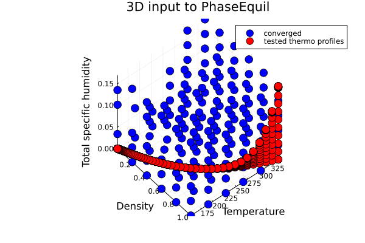
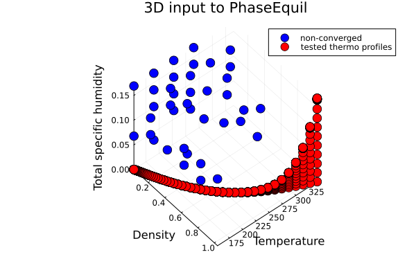
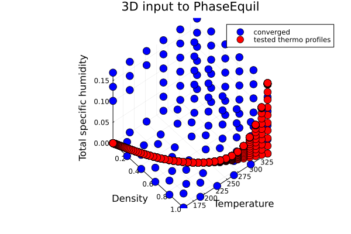
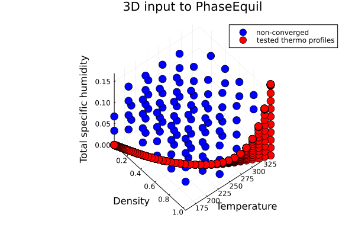
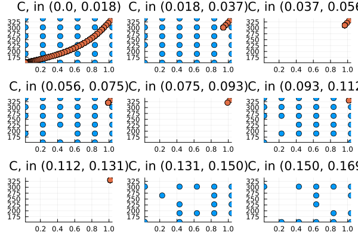
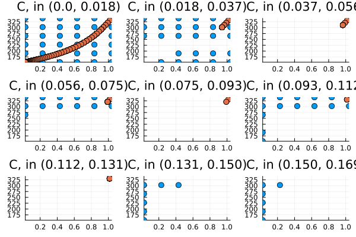
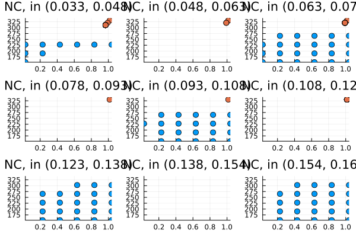

Saturation adjustment input space convergence maps
The saturation adjustment procedure requires solving a non-linear equation.
In the Tested Profiles section, we plotted the tested thermodynamic states. In this section, we explore the convergence of the input space beyond what is tested. In particular, rather than being interested in physically meaningful combinations of constructor inputs (e.g., ρ, e_int, q_tot), we are interested in all permutations of inputs within a given range of ρ, e_int, q_tot. Some of these permutations may not be physically meaningful, or likely to be observed in climate simulations, but showing the convergence space helps illustrate the buffer between our tested profiles and the nearest space where convergence fails.
This section is dedicated to monitoring the status and improvement of the performance and robustness of various numerical methods in solving the saturation adjustment equations for various thermodynamic formulations.
dims in docs/src/saturation_adjustment.jl is currently set to $dims = (6, 6, 6);$ to avoid heavy computations in the doc build, but you may want to increase it to, e.g., $dims = (10, 10, 10);$ when running locally to see a higher resolution map.
include("saturation_adjustment.jl")Convergence percentages:
RootSolvers.SecantMethod = 0.8148148148148148
RootSolvers.NewtonsMethod = 0.53703703703703713D space
| Numerical method | Converged | Non-converged |
|---|---|---|
| SecantMethod |  |  |
| NewtonsMethod |  |  |
| NewtonsMethodAD |  |  |
| RegulaFalsiMethod |  |  |
2D slices, binned by total specific humidity
| Numerical method | Converged | Non-converged |
|---|---|---|
| SecantMethod |  |  |
| NewtonsMethod |  |  |
| NewtonsMethodAD |  |  |
| RegulaFalsiMethod |  |  |